Co-worker
Analyses needs, plans, documents, builds prototypes, code, dashboards and presentations.
It knows your experience, applies your criteria and works with you from a business need to a delivered solution, while it quietly turns everything you do into evidence for your CV and your career plan.
Analyses needs, plans, documents, builds prototypes, code, dashboards and presentations.
Challenges your ideas with good practices, flags risks and shows how someone one level above would do it.
Logs every achievement with evidence, so your CV and career plan build themselves.
Two halves work on the same plain Markdown files on your computer: a local web app (the window) and Claude Code (the brain). Click any piece to learn what it does.
Click a component to see what it does.
Seven phases. Nothing moves forward without your approval. Use the arrows, your keyboard (← →) or let it play.
The app launches Claude Code in the background for you, and you watch every step live.
Your files live on your PC and are never uploaded to the project. Only the text a task needs goes to Claude, through your own account.

Every button in the app runs one of these skills. Power users can type them in Claude Code inside the project folder.
Then open http://localhost:3210, connect Claude Code in Settings, and start your onboarding.
$ git clone https://github.com/MaiBP/professional-twin.git $ cd professional-twin $ npm install $ npm run init # create your private folders $ npm start # opens http://localhost:3210